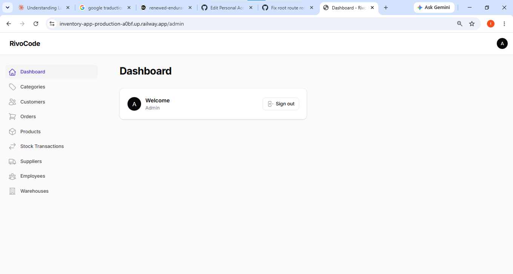
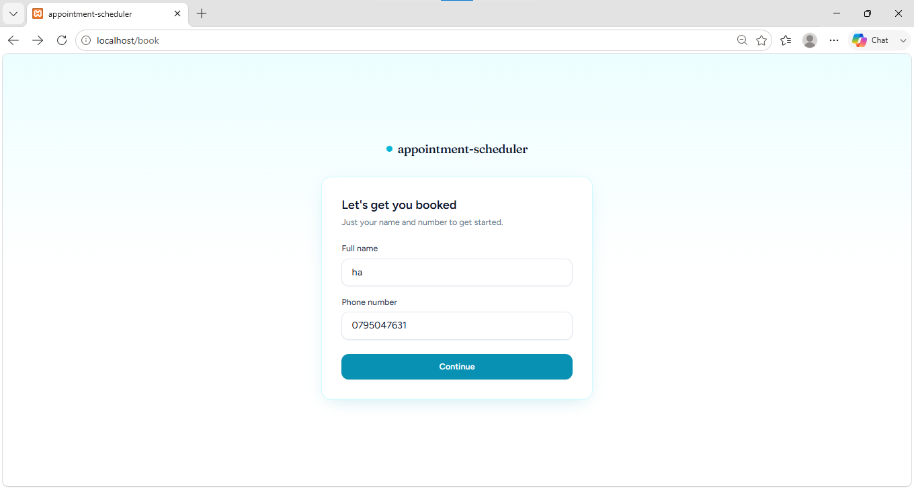

Inventory & operations
Stock, suppliers, orders, and warehouses brought into one dependable system.
↗Custom software for everyday operations
I build reliable web applications that help small businesses replace spreadsheets, paper, and avoidable mistakes with one clear way to work. With 1+ year of professional programming experience, I focus on systems people can trust.
The useful part
When work lives across notebooks, messages, and disconnected spreadsheets, small errors become expensive. I turn that messy middle into a system your team can actually trust.
Tell me where work gets stuck ↗What I build
Focused systems for the workflows that keep a business moving.
Stock, suppliers, orders, and warehouses brought into one dependable system.
↗Real-time availability and staff scheduling that prevents double-bookings.
↗Clean, role-based dashboards for internal tools and repeatable work.
↗A complete build from thoughtful interface to reliable database logic.
↗Selected work
A closer look at systems designed around real business constraints.

A clean, role-based inventory system for small businesses to track stock, manage orders, and handle suppliers in one place.
Manual stock tracking made errors hard to spot and accountability difficult.
One role-based workspace with live stock, order flows, and a full transaction history.
A clear operational source of truth, with fewer stock surprises and visible responsibility.
admin@gmail.compasswordAaBb
A real-time booking flow replacing a paper notebook that caused double-bookings and scheduling chaos.
A paper calendar made it easy to double-book clients or leave stylists idle.
A phone-first flow with real availability, stylist schedules, and server-side rechecks.
The client-facing booking experience is complete; the owner dashboard remains in active development.
How it works
We talk through the current workflow, friction, and desired outcome.
You get a focused scope, timeline, and practical approach for your project.
The system takes shape with regular check-ins and visible progress.
Deployment, handover, and basic support to help the team get moving.
A little about me
I’m Taha, a freelance software developer focused on custom business web applications. I bring 1+ year of professional programming experience and a third-year Artificial Intelligence Engineering background to projects where clarity and reliability matter.
Have a workflow in mind?
Tell me what is taking too much time, or where mistakes keep appearing. We can scope the right system together.